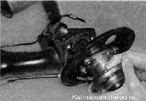
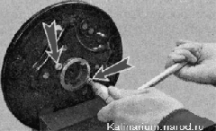

3. Пропуская трос стояночного тормоза через отверстие в опорном щите, снимаем ось в сборе со ступицей и щитом.

4. Закрепляем щит в тисках с мягкими накладками на губках. Большой крестовой отверткой с воротком выворачиваем два винта крепления щита.

5. Снимаем щит с оси ступицы.
Установка
1. Устанавливаем щит в обратной последовательности.
2. Удаляем воздух из системы гидропривода.
3. Регулируем стояночную тормозную систему.
|